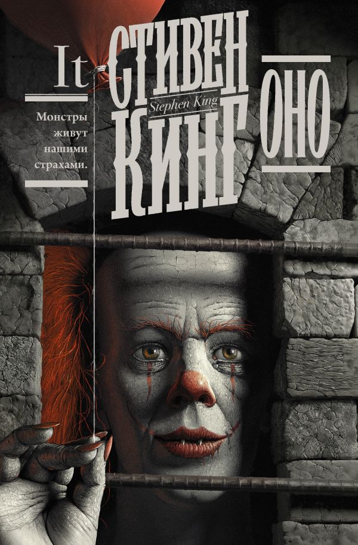
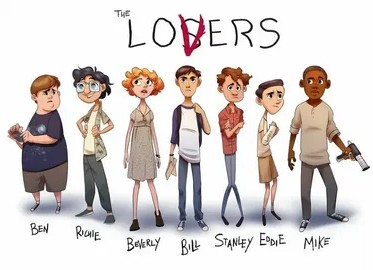

В вымышленном городе Дерри в штате Мэн происходит волна страшных убийств, один за одним погибают дети, но полиция бессильна. Маньяк не оставляет следов, нет ни единой зацепки. Семеро одиннадцатилетних ребят решают найти убийцу — жестокое существо по имени Оно. Каждому из них предстоит пережить встречу с чудовищем, и никто из взрослых не придёт на помощь. Ведь Оно — воплощение детских страхов, которое взрослые просто не способны увидеть.
В произведении затрагиваются темы: власть памяти, сила объединённой группы, влияние травм детства на взрослую жизнь.

Почему стал бестселлером ?